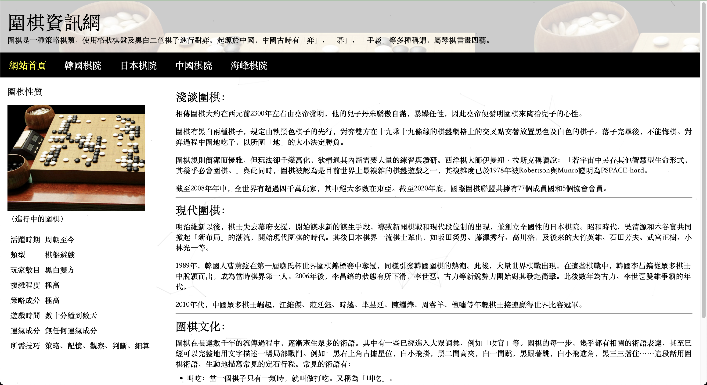
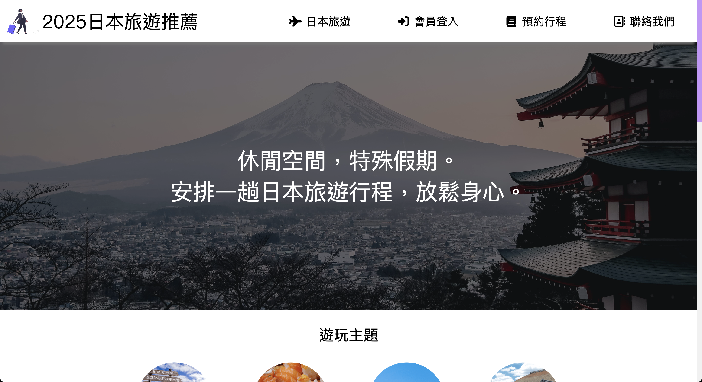
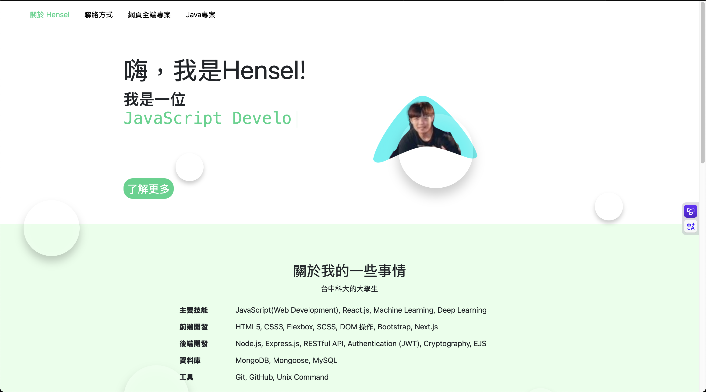
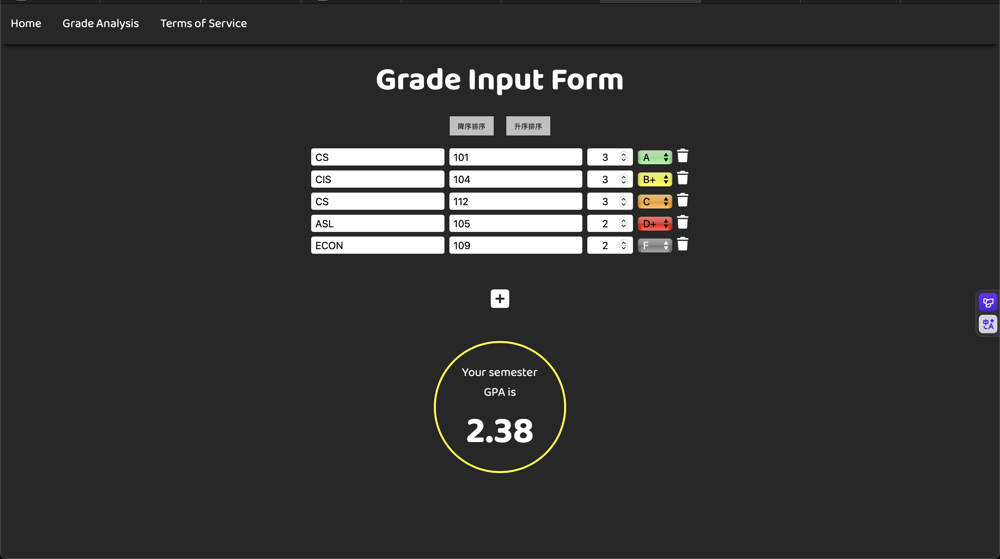
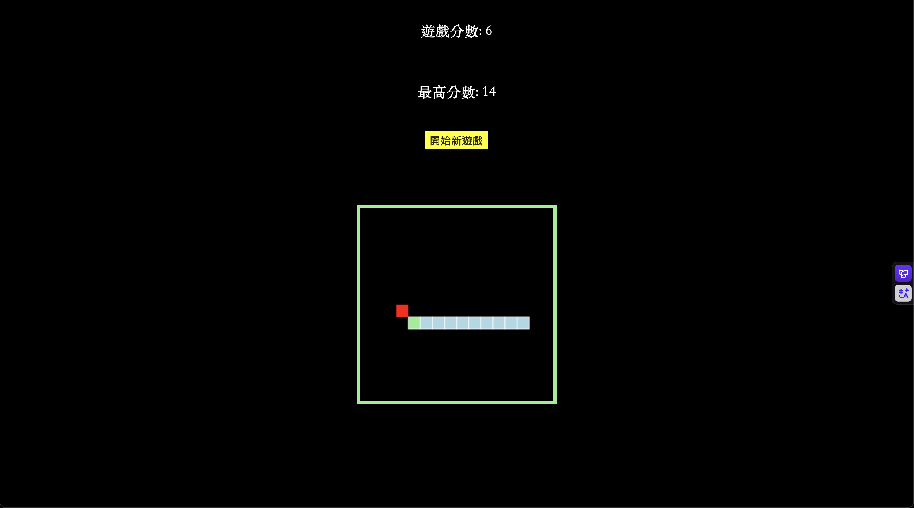
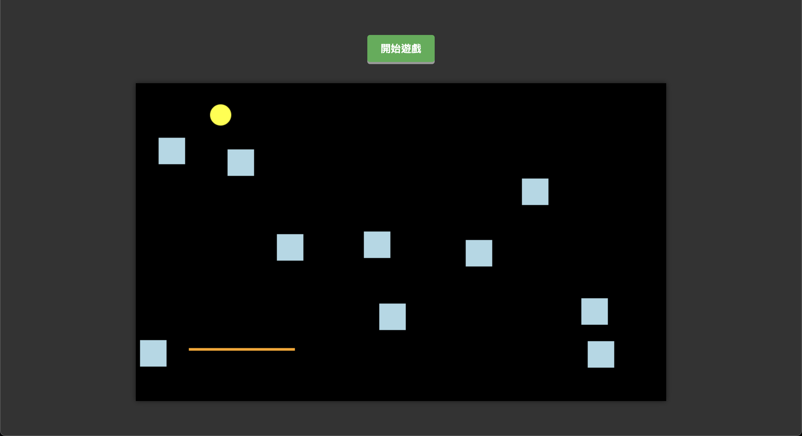
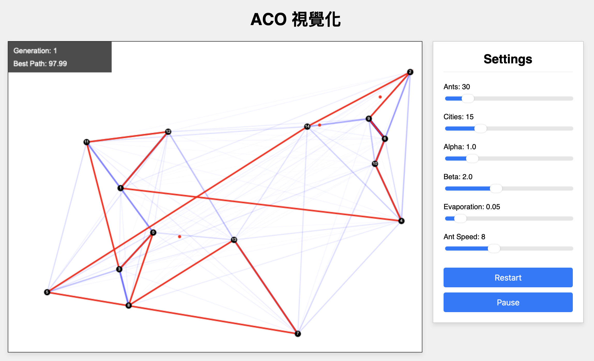

我的網頁全端專案
以下是我完成的一些網頁全端專案：
專案1：圍棋網站
| 技術 / 功能 | 說明 |
|---|---|
| HTML / CSS | 建構一個五頁式的靜態資訊網站，包含表格、列表與圖文排版。 |
| CSS Flexbox | 應用 display: flex 完成導覽列及主內容的排版佈局。 |
| 響應式網頁 (RWD) | 使用 Media Query 在小螢幕上自動將導覽列切換為垂直排列。 |
| Google Charts | 於「日本棋院」頁面中，引入 Google Charts 函式庫，將獎金數據視覺化為圓餅圖。 |
| 外部 JS 函式庫 | 引入 canvas-nest.js 實現動態背景特效。 |
專案2：日本旅遊網站
| 技術 / 功能 | 說明 |
|---|---|
| SCSS (Sassy CSS) | 使用 SCSS 變數（$theme-color）和巢狀結構來撰寫與管理 CSS。 |
| CSS 佈局 | 應用 position: fixed 製作全頁固定背景，並使用 position: sticky 實現導覽列。 |
| 響應式網頁 (RWD) | 使用 Media Query，在螢幕寬度小於 950px 時將導覽列改為垂直堆疊。 |
| JavaScript (ES6) | 使用 setInterval 函式，每 3 秒自動更換 Hero 區塊的背景圖片，實現自動輪播效果。 |
| 整合外部資源 | 嵌入 Google Maps iframe 顯示地圖，並使用 Font Awesome 圖示庫。 |
專案3：個人網站
| 技術 / 功能 | 說明 |
|---|---|
| SCSS (Sassy CSS) |
使用巢狀結構 (Nesting) 和 @media Query 撰寫 RWD
響應式網頁樣式，並管理 CSS 變數。
|
| CSS Flexbox & Grid | 應用 Flexbox 於導覽列和頁首排版；使用 Grid 於專案卡片排版，並自適應欄位寬度。 |
| JavaScript (Class) |
撰寫 ES6 class Typewriter
來實現首頁「關於我」的動態打字機特效。
|
| JavaScript (RWD) |
實作漢堡選單 (Hamburger Menu) 功能，在小螢幕上點擊切換
.active class 來顯示/隱藏導覽列。
|
| JavaScript (DOM) |
監聽
window.scroll
事件，在頁面滾動時動態為導覽列切換
.scrolled class 以增加陰影。
|
| CSS 動畫 & Bootstrap |
利用 @keyframes 製作背景漂浮泡泡動畫；並整合
Bootstrap 用於技能進度條 (Progress Bar) 展示。
|
專案4：GPA成績計算網站
| 技術 / 功能 | 說明 |
|---|---|
| HTML / CSS | 建立成績輸入表單的介面，並設計整體視覺樣式與即時顏色反饋。 |
| JavaScript (DOM) | 使用 DOM 操作，實作表單欄位的動態「新增」與「刪除」功能。 |
| JavaScript (Logic) | 即時監聽使用者輸入事件，動態計算加權平均 GPA 並更新顯示結果。 |
| JavaScript (Algorithm) | 實作 Merge Sort (合併排序) 演算法，提供成績「升序」與「降序」排序功能。 |
| GSAP | 應用 GSAP 的 TimelineMax 函式庫，製作網頁載入時的ヒーロー(主要視覺區塊)開場動畫。 |
專案5：貪食蛇遊戲
| 技術 / 功能 | 說明 |
|---|---|
| HTML Canvas |
使用 HTML 的
<canvas> 元素作為遊戲畫布，並透過 2D 繪圖
API (getContext("2d")) 繪製所有遊戲物件。
|
| JavaScript (遊戲邏輯) |
使用 setInterval 建立遊戲迴圈 (Game
Loop)，並透過陣列 (Array) 存儲與更新蛇的身體位置資料。
|
| JavaScript (事件監聽) |
監聽 keydown
事件，並透過在遊戲迴圈中「移除」及「重新加入」監聽器，鎖定每幀僅能變更一次方向，藉此防止
180 度迴轉。
|
| JavaScript (碰撞偵測) |
編寫邏輯來偵測蛇的頭部 (newHead) 是否與食物
(myFruit) 或自身身體 (snake)
重疊，以觸發得分或遊戲結束。
|
| LocalStorage |
使用 localStorage.getItem 和
localStorage.setItem
在瀏覽器中永久保存玩家的「最高分數」(highestScore)。
|
專案6：彈跳球遊戲
| 技術 / 功能 | 說明 |
|---|---|
| HTML Canvas |
使用 <canvas> 元素作為遊戲畫布，並透過 2D
繪圖 API (getContext("2d")) 繪製所有遊戲物件。
|
| JavaScript (遊戲狀態) |
使用「開始遊戲」按鈕觸發 setInterval
來啟動遊戲迴圈 (Game Loop)，並在遊戲勝利時
clearInterval 停止迴圈。
|
| JavaScript (座標修正) |
使用 getBoundingClientRect()
取得 Canvas 的邊界，以修正滑鼠事件 (e.clientX)
的座標，確保反彈板能精確跟隨鼠標。
|
| JavaScript (事件監聽) |
監聽 mousemove 事件讓反彈板 X
軸即時跟隨；並使用 mousedown /
mouseup
事件切換旗標，僅在「按住」狀態下才允許 Y 軸移動。
|
| JavaScript (Class) |
使用 ES6 的 class 關鍵字定義
Brick (磚塊) 類別，並用
Math.random 隨機生成磚塊位置。
|
專案7：ACO視覺化演算法
| 技術 / 功能 | 說明 |
|---|---|
| HTML Canvas API |
使用 <canvas>
元素，透過 2D 繪圖 API (getContext("2d"))
即時繪製所有視覺元件，包含城市、螞蟻、費洛蒙路徑與最佳路徑。
|
| JavaScript (動畫迴圈) |
利用 requestAnimationFrame 打造高效能的主迴圈
(mainLoop)，不斷更新與重繪螞蟻的動態位置，實現流暢的即時模擬。
|
| JavaScript (ES6 Class) |
使用
class Ant
以物件導向方式封裝每隻螞蟻的狀態，包含獨立的路徑
(path)、位置 (x, y) 與移動
(update) 邏輯。
|
| 演算法實作 (ACO) |
完整實作蟻群最佳化 (Ant Colony Optimization)
演算法，包含機率計算 (calculateProbs)
與費洛蒙的揮發/放置 (updatePheromones)。
|
| JavaScript (DOM) |
透過 addEventListener 綁定 HTML
拉桿與按鈕，實現「即時調整參數」(如螞蟻數量、Alpha)
與「控制模擬」(暫停/重啟) 的功能。
|
| CSS Flexbox |
應用 display: flex
佈局，將畫布 (canvas) 與設定面板
(#controls) 完美地並排顯示。
|

--- 網頁全端專案列表結束 ---